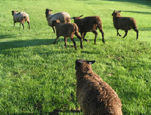

| Sheep Coats The ewes spent the summer at a neighbors farm. It was a very dry year, and the grass was not growing, so the sheep were supplemented with hay starting in August. When sheep begin eating hay (or are in a barn with straw bedding), they are fitted for coats to keep their fleece clean. If you are raising sheep to sell fleeces to hand spinners, the cleaner the fleece, the more money you can charge per pound. If you do not use coats, it takes a lot of time to pick out the vegetative matter, and you will never get it all out of the fleece. |
||||||||||||||||||||||
| The sheep wear coats all winter. When coats become tight due to growing fleece and the pregnant ewes, they get larger coats. After March shearing, sheep wear coats to keep them warmer during cold spring weather, and to keep them clean until they stop eating hay and begin grazing grass in May. | ||||||||||||||||||||||
| Older Lambs Older lambs nurse less often and very briefly. It may not seem like much, but the lambs get immune support from the milk. It helps them stay healthy, even when the summer grass is not the best quality and the exposure to worms is highest. Ewes decide when to stop nursing their lambs. Ram lambs are separated from the flock in early September, when the days shorten and the temperatures get cooler. |
||||||||||||||||||||||
| Nursing ewes need plenty of good quality forage to eat to maintain their body condition and to feed the lambs. | ||||||||||||||||||||||
| During fall, there is less grass and sheep may be supplemented with hay. They also graze on acorns from red oak trees, a nutritious food source. Tannins in acorns are known to expel worms. | ||||||||||||||||||||||
| Fall In early November, the ewes and ewe lambs come home from a neighbors field. The ewes to be bred are separated from the rest of the sheep. Ewes have their feet trimmed, coats fitted and then they are ready for the ram. |
||||||||||||||||||||||
| Apples are a special fall treat. | ||||||||||||||||||||||
| When the sheep came home for breeding and the winter, I put them in a fenced area in the front yard. Early in the morning I looked out my window to see them resting among the rocks. | ||||||||||||||||||||||
|  | ||||||||||||||||||||||
| Summer is over and running in the lush pasture is just a memory! | ||||||||||||||||||||||
| Ram Angelo & Ewe Phoebe | ||||||||||||||||||||||
| And the year begins again… | ||||||||||||||||||||||